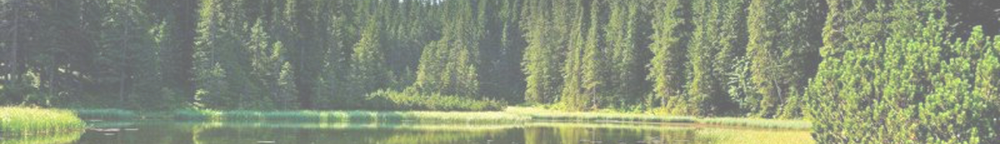

Про нас
UA
UA
Про нас

HolidayTime
Відпочинок, емоції, враження, нетипові маршрути, неймовірні локації - це все про сільський еко-туризм в Україні
Наша команда зібрала найколоритніші місця нашої країни саме для тебе.
Місія нашої компанії подарувати незабутні враження та показати Україну з іншої сторони. Пройти разом з
Вами лісовими стежками, щоб попоїсти свіжого карпатського сиру. Пірнути у каньйон та побачити занурене
під товщу років село Бакота. Покататись на гандолах в “українській Венеції”.
Пізнати Україну разом!